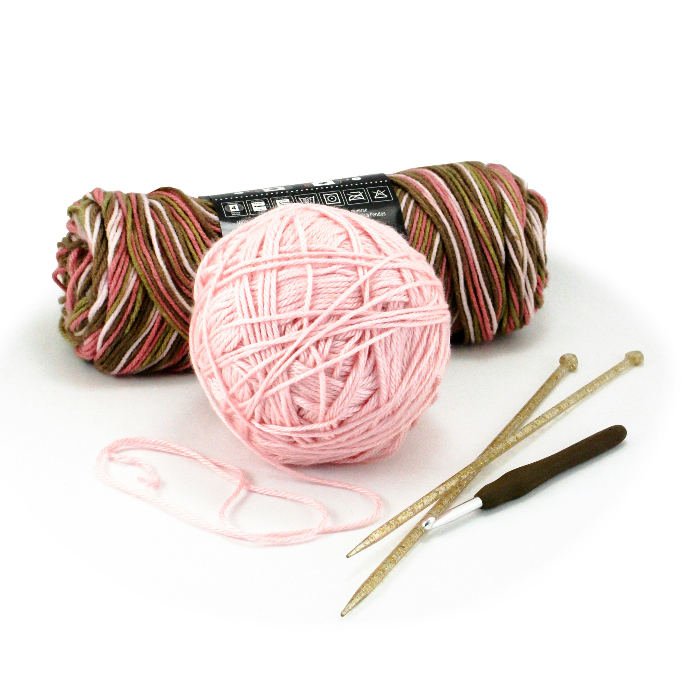
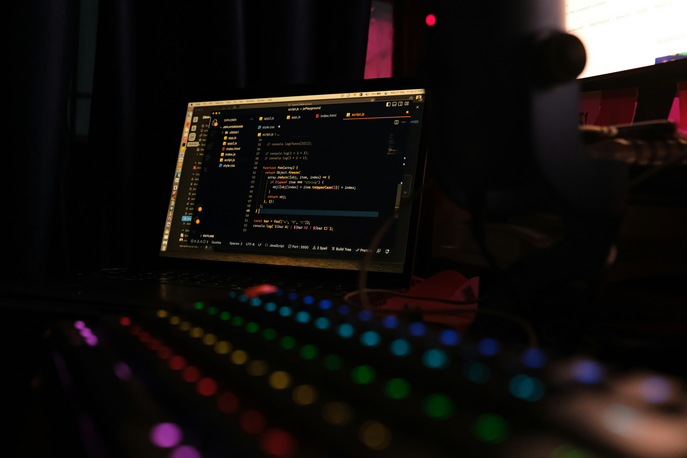

Fiber Arts
October 6, 2026, by Denae Young

As long as I've known myself, I have loved fashion. I also loved making and destroying things.Therefore when I discovered Fiber Arts, It was a dream come true. I started off with Crocheting, learning from the basics from Youtube videos and practicing anytime I could. I eventually developed the craft really well to the point where I could make full articles of clothing like shirts, pants and even dresses.
Crocheting eventually piqued my interest in other fiber arts like knitting and weaving. Thought I have not had the chance to actually try them, they seem very intriguing. Another interest type of fiber art that I really enjoy is Embroidery. Fiber Arts are normally seen as " grandma activites", however they are really fun and engaging. The idea of making and decorating textiles is very satisfying and I believe more people should give it a try.
Coding
October 6, 2026, by Denae Young

Since we are on the topic of creating and destorying, another one of my passions is coding. It's not necessarily my favorite but it is an activity that I do enjoy ( once the academic and career pressures are taken out of the equation). I have been coding for about 4 years now and I have learned a lot about it. I have learned how to solve problems and think logically. I have also learned how to work with different programming languages such as C, Python, Java and I'm currently learning more.
For me, coding has a similar appeal to fiber arts - it allows me to create something from nothing and provides a sense of accomplishment when I successfully solve a problem. Though it can be challenging at times and the threat of AI taking my job is there, I still love creating programs and learning new technologies.